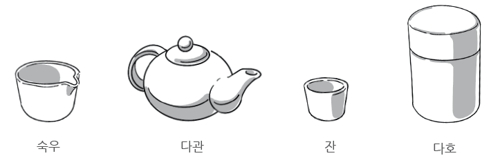
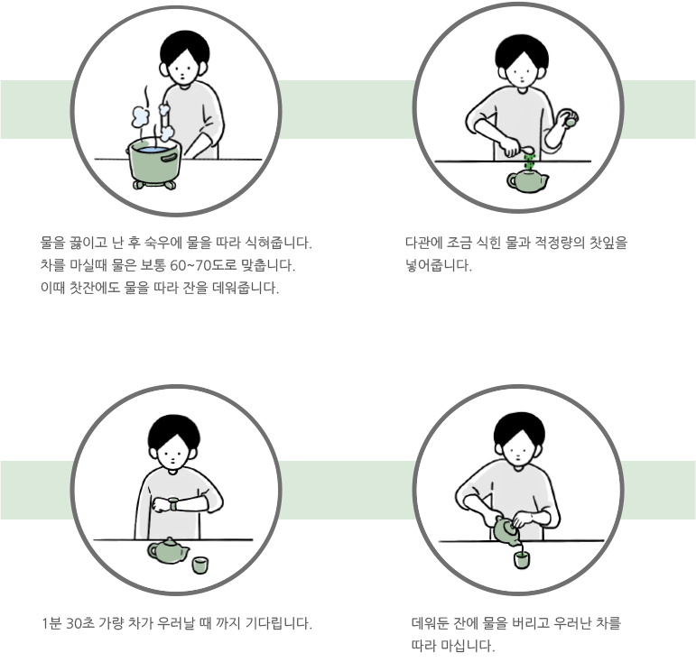

다도에서 가장 중요한 것은 시간, 차의 양, 그리고
물의 양과 온도입니다.
세가지의 조화가 적절하게
이뤄진다면 차를 더욱 맛있게 즐길 수 있습니다.
잎차로 차를 우리기 위해선 필요한 조건을
잘 갖춰야 차 본연의 맛을 더욱 잘 느낄 수 있습니다.
|  |
|---|
|
숙우는 끓인 물을 식히기 위해 사용하는 다기입니다. 차는 너무 뜨거운 물로 우리면 쓴 맛이 강해지기 때문에 60~70도 정도로 식혀서 차를 우려야 본연의 맛을 잘 느낄 수 있습니다. 다관은 차를 우릴 때 쓰는 것이고 1분에서 1분 30초 가량 차를 우리고 나면 잔에 따라 마십니다. 잎차를 보관할 때는 다호라는 통에 잎차를 담아 햇빛과 공기에 오염되지 않게 합니다. 다기를 구비할 때는 도자기로 된 것을 고르길 권장합니다. 도자기로 된 다기는 다른 재료에 비해 차가 빨리 식는 것을 막아줘 더 오래 따뜻하게 차를 마실 수 있게 도와줍니다. |
기본순서 |
||
|  | ||